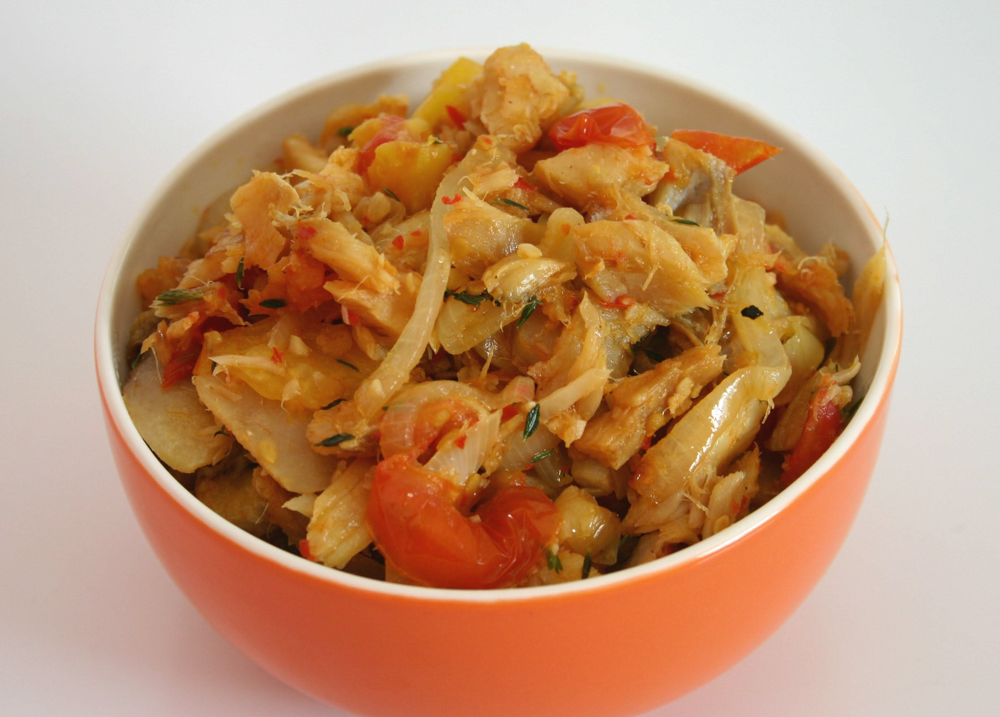

Le Tinen et morue
Plat national et miroir de l'histoire de l'île, le tinen et morue (souvent orthographié *ti-nain morue*) associe des bananes vertes (ti-nain) cuites à l'eau et de la morue séchée et salée émiettée.
Consommé à l'origine dès l'aube par les travailleurs des plantations pour sa richesse énergétique, ce plat de subsistance est devenu une spécialité incontournable, savoureuse et indissociable du patrimoine martiniquais.
Le secret de sa préparation
La préparation du ti-nain demande un petit coup de main : les bananes vertes sont épluchées délicatement (souvent sous l'eau ou avec les mains huilées pour éviter que la sève ne colle) puis cuites dans une eau bouillante salée jusqu'à ce qu'elles deviennent tendres.
À côté, la morue est dessalée, pochée puis finement émiettée (on retire soigneusement les arêtes). L'ensemble est ensuite dressé et généreusement arrosé d'une vinaigrette chaude ou d'une huile de friture parfumée aux cives, à l'oignon, à l'ail et au piment doux. Il est très fréquemment accompagné de tranches d'avocat pays et de concombre pour apporter de la fraîcheur.